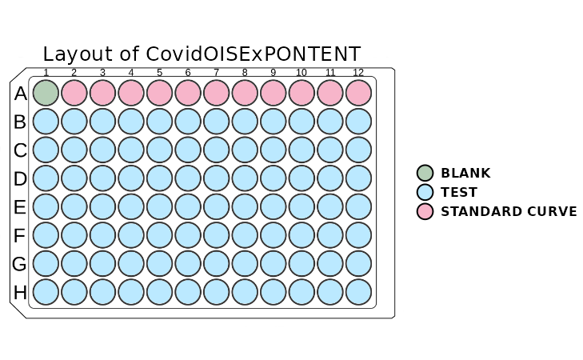
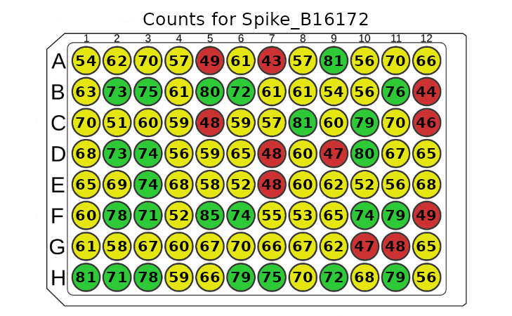
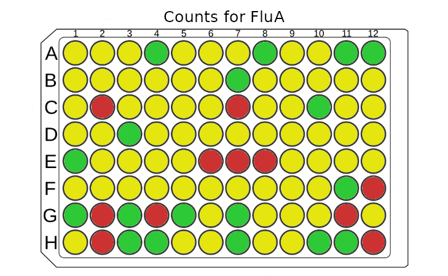
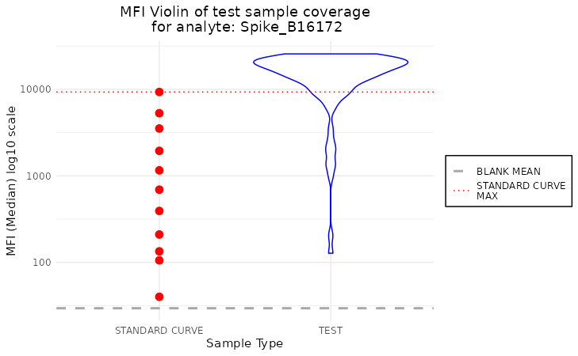
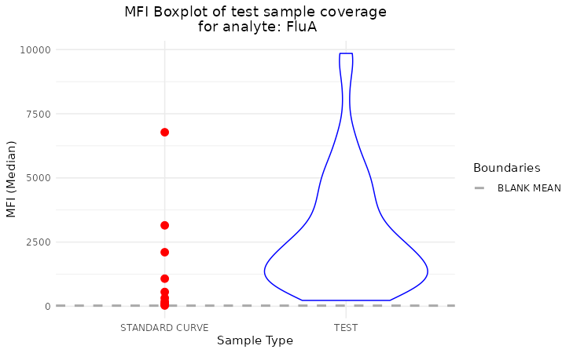
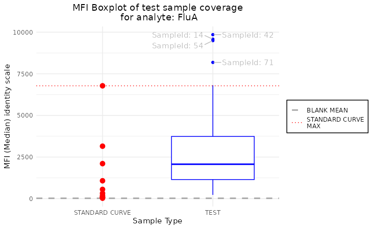
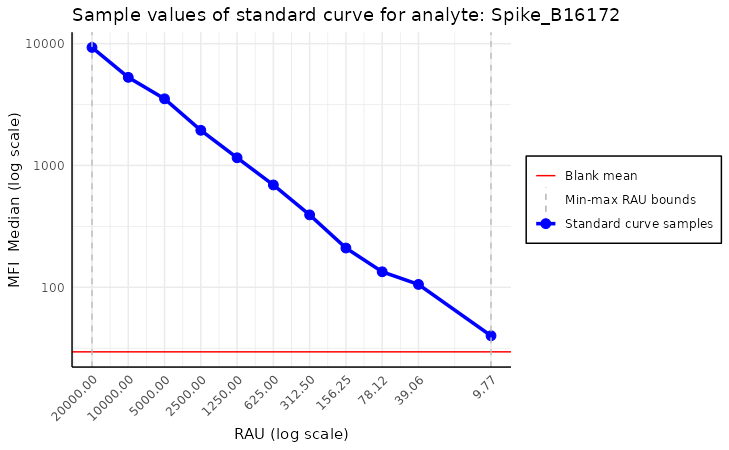

vignettes/our_plots.Rmd
our_plots.RmdThe PvSTATEM package provides a variety of plots that
can be used to visualize the Luminex data. In this vignette, we will
show how to use them. To present the package’s functionalities, we use a
sample dataset from the Covid OISE study, which is pre-loaded into the
package. Firstly, let us load the dataset as the plate
object.
library(PvSTATEM)
plate_filepath <- system.file("extdata", "CovidOISExPONTENT.csv", package = "PvSTATEM", mustWork = TRUE) # get the filepath of the csv dataset
layout_filepath <- system.file("extdata", "CovidOISExPONTENT_layout.xlsx", package = "PvSTATEM", mustWork = TRUE)
plate <- read_luminex_data(plate_filepath, layout_filepath) # read the data#> Reading Luminex data from: /home/runner/work/_temp/Library/PvSTATEM/extdata/CovidOISExPONTENT.csv
#> using format xPONENT
#>
#> New plate object has been created with name: CovidOISExPONTENT!
#>
plate#> Plate with 96 samples and 30 analytesIn this vignette, we will omit some validation functionality and
focus on the plots. After the plate is successfully loaded, we should
validate it by looking at some basic information about it using the
summary function. However, we can also obtain similar information in a
more visual way by using the plot_layout function. It helps
to quickly asses whether the layout of the plate is correctly read from
Luminex or the layout file. The function takes the plate
object as the argument.
plot_layout(plate)
The plot above shows the layout of the plate. The wells are colored
according to the type of the sample. If the user is familiar with the
color scheme of this package, there is an option to turn off the legend.
This can be done by setting show_legend parameter to
FALSE.
If the plot window is resized, it is recommended that the function be rerun to adjust the scaling of the plot. Sometimes, the whole layout may be shifted when a legend is plotted. To solve this issue, one has to stretch the window in the direction of the layout shift, and everything will be adjusted automatically.
The plot_counts function allows us to visualize the
counts of the analyte in the plate. This plot is useful for quickly
spotting wells with a count that is too low. The function takes the
plate object and the analyte name as the arguments. The
function will return an error message if there is a typo in the analyte
name.
plot_counts(plate, "Spike_B16172")
The plot above shows the counts of the analyte “OC43_NP_NA” in the
plate. The wells are colored according to the count of the analyte.
Too-low values are marked with red, values on the edge of the threshold
are marked with yellow, and the rest are marked with green. There is an
option to show legend by setting show_legend parameter to
TRUE. There is also an option to show just the colors
without the counts by setting show_counts parameter to
FALSE. This provides a cleaner plot without the counts.
plot_counts(plate, "FluA", plot_counts = FALSE)
The plot_mfi_distribution function allows us to
visualize the distribution of the MFI values for test samples for the
given analyte. And how they compare to standard curve samples on a given
plate. This plot is helpful to asses if the standard curve samples cover
the whole range of MFI of test samples. The function takes the
plate object and the analyte name as the arguments. The
function will return an error message if there is a typo in the analyte
name.
plot_mfi_for_analyte(plate, "Spike_B16172")
This plot shows the distribution of the MFI values for test samples
for the analyte “OC43_NP_NA”. The test samples are colored in blue, and
the standard curve samples are colored in red. The default plot type is
boxplot, but there is an option to change it to violin plot by setting
the plot_type parameter to violin.
plot_mfi_for_analyte(plate, "FluA", plot_type = "violin")
Finally, we arrive at the most important visualization in our package
- the standard curve related plots. Those plots help assess the quality
of the fit, which will be crucial to us in the next step of package
development. It comes in two flavors:
plot_standard_curve_analyte and
plot_standard_curve_analyte_with_model. The first does not
incorporate the model, while the second does.
This plot should be used to assess the quality of the assay. If anything goes wrong during the plate preparation, it should be visible easily in this plot.
plot_standard_curve_analyte(plate, "Spike_B16172")
Above, we see the default plot for the analyte “Spike_B16172”. We can
modify this plot by setting the parameters of the function. For example,
we can change the direction of the x-axis by setting
decreasing_dilution_order parameter to FALSE.
Other parameters worth mentioning are log_scale, the
default value is c("all"), which means that both the x and
y axes are in the log scale. Other possible values for this parameter
are c("dilutions") and c("MFI"), which means
that only the x or y axis is in the log scale. There is also an option
to turn off some parts of the plot by setting parameters
plot_line, plot_blank_mean and
plot_dilution_bounds to FALSE. The first
disables drawing the line between standard curve points, the second
turns off plotting the mean of blank samples, and the last disables
plotting the dilution bounds.
This visualization is similar to the previous one but also incorporates the model. Thus, it carries more information at the cost of being more complex and crowded.
model <- create_standard_curve_model_analyte(plate, analyte_name = "Spike_B16172")
plot_standard_curve_analyte_with_model(plate, model)
Here, we do not have to specify the analyte name, as the model
already carries this information. The model is created by the
create_standard_curve_model_analyte function, which takes
the plate object and the analyte name as the arguments, but
this is not the focus of this vignette. The arguments of this function
are very similar to the previous one, except here there is a missing
plot_line' argument, and there are two new arguments:plot_asymptoteandplot_test_predictions. The first turns off plotting the asymptotes, and the second disables plotting the test samples' predictions. By default, both are set toTRUE`.